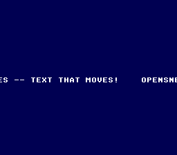

|
OpenSNES
Modern Open-Source SNES Development SDK
|
|
OpenSNES
Modern Open-Source SNES Development SDK
|
Family 1 — Text · rung 1.4 (move text)
The "make it move" rung of the Text ladder. It prints one line, then scrolls the whole text background horizontally every frame, so the message marches across the screen like a marquee and wraps around seamlessly — without ever rewriting the tilemap.

The PPU has hardware scroll registers per background. You never redraw the tilemap to move text — you change where the PPU starts reading it. Increasing BG1's horizontal offset scrolls the view right, so the content appears to travel left. Because the tilemap width equals the screen width, the wrap is seamless and costs nothing per frame beyond a single register update.
Run scroll_message.sfc in luna. You should see OPENSNES – TEXT THAT MOVES! scrolling right-to-left forever.
console, dma, text, background, sprite
← 1.1 print_string · → 1.5 text effects (typewriter, wave, fade, colour-cycle)